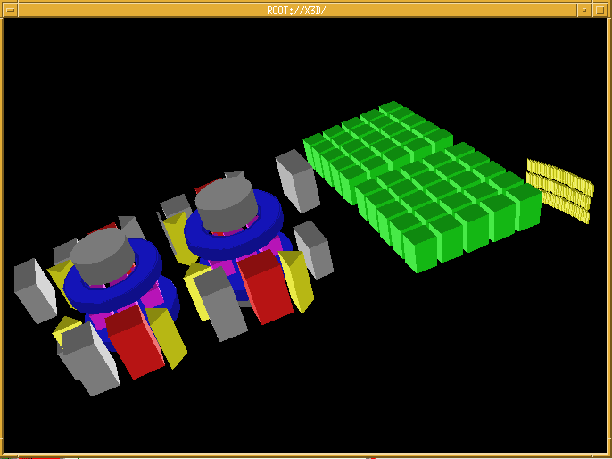
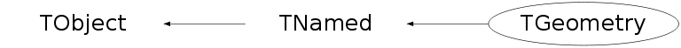

class TGeometry: public TNamed
T G E O M E T R Y description
The Geometry class describes the geometry of a detector.
The current implementation supports the GEANT3 style description.
A special program provided in the ROOT utilities (toroot) can be used
to automatically translate a GEANT detector geometry into a ROOT geometry.
a Geometry object is entered into the list of geometries into the
ROOT main object (see TROOT description) when the TGeometry
constructor is invoked.
Several geometries may coexist in memory.
A Geometry object consist of the following linked lists:
- the TMaterial list (material definition only).
- the TRotmatrix list (Rotation matrices definition only).
- the TShape list (volume definition only).
- the TNode list assembling all detector elements.
Only the Build and Draw functions for a geometry are currently supported.
The conversion program from Geant to Root has been added in the list
of utilities in utils directory.(see g2root)
The executable module of g2root can be found in $ROOTSYS/bin/g2root.
To use this conversion program, type the shell command:
g2root geant_rzfile macro_name
for example
g2root na49.geom na49.C
will convert the GEANT RZ file na49.geom into a ROOT macro na49.C
To generate the Geometry structure within Root, do:
Root > .x na49.C
Root > na49.Draw()
Root > wh.x3d() (this invokes the 3-d Root viewver)
Root > TFile gna49("na49.root","NEW") //open a new root file
Root > na49.Write() //Write the na49 geometry structure
Root > gna49.Write() //Write all keys (in this case only one)
Note: all keys are also written on closing of the file, gna49.Close or
when the program exits, Root closes all open files correctly.
Once this file has been written, in a subsequent session, simply do:
Root > TFile gna49("na49.root")
Root > na49.Draw()
The figure below shows the geometry above using the x3d viewer.
This x3d viewver is invoked by selecting "View x3d" in the View menu
of a canvas (See example of this tool bar in TCanvas).
/*

*/
Function Members (Methods)
public:
| TGeometry() | |
| TGeometry(const char* name, const char* title) | |
| virtual | ~TGeometry() |
| void | TObject::AbstractMethod(const char* method) const |
| virtual void | TObject::AppendPad(Option_t* option = "") |
| virtual void | Browse(TBrowser* b) |
| virtual void | cd(const char* path = 0) |
| static TClass* | Class() |
| virtual const char* | TObject::ClassName() const |
| virtual void | TNamed::Clear(Option_t* option = "") |
| virtual TObject* | TNamed::Clone(const char* newname = "") const |
| virtual Int_t | TNamed::Compare(const TObject* obj) const |
| virtual void | TNamed::Copy(TObject& named) const |
| virtual void | TObject::Delete(Option_t* option = "")MENU |
| virtual Int_t | TObject::DistancetoPrimitive(Int_t px, Int_t py) |
| virtual void | Draw(Option_t* option = "") |
| virtual void | TObject::DrawClass() constMENU |
| virtual TObject* | TObject::DrawClone(Option_t* option = "") constMENU |
| virtual void | TObject::Dump() constMENU |
| virtual void | TObject::Error(const char* method, const char* msgfmt) const |
| virtual void | TObject::Execute(const char* method, const char* params, Int_t* error = 0) |
| virtual void | TObject::Execute(TMethod* method, TObjArray* params, Int_t* error = 0) |
| virtual void | TObject::ExecuteEvent(Int_t event, Int_t px, Int_t py) |
| virtual void | TObject::Fatal(const char* method, const char* msgfmt) const |
| virtual void | TNamed::FillBuffer(char*& buffer) |
| virtual TObject* | FindObject(const char* name) const |
| virtual TObject* | FindObject(const TObject* obj) const |
| Int_t | GeomLevel() const |
| static TObjArray* | Get(const char* name) |
| Float_t | GetBomb() const |
| TRotMatrix* | GetCurrentMatrix() const |
| TNode* | GetCurrentNode() const |
| TRotMatrix* | GetCurrentPosition(Double_t* x, Double_t* y, Double_t* z) const |
| TRotMatrix* | GetCurrentPosition(Float_t* x, Float_t* y, Float_t* z) const |
| Bool_t | GetCurrentReflection() const |
| virtual Option_t* | TObject::GetDrawOption() const |
| static Long_t | TObject::GetDtorOnly() |
| virtual const char* | TObject::GetIconName() const |
| THashList* | GetListOfMaterials() const |
| THashList* | GetListOfMatrices() const |
| TList* | GetListOfNodes() const |
| THashList* | GetListOfShapes() const |
| TMaterial* | GetMaterial(const char* name) const |
| TMaterial* | GetMaterialByNumber(Int_t number) const |
| virtual const char* | TNamed::GetName() const |
| TNode* | GetNode(const char* name) const |
| virtual char* | TObject::GetObjectInfo(Int_t px, Int_t py) const |
| static Bool_t | TObject::GetObjectStat() |
| virtual Option_t* | TObject::GetOption() const |
| TRotMatrix* | GetRotMatrix(const char* name) const |
| TRotMatrix* | GetRotMatrixByNumber(Int_t number) const |
| TShape* | GetShape(const char* name) const |
| TShape* | GetShapeByNumber(Int_t number) const |
| virtual const char* | TNamed::GetTitle() const |
| virtual UInt_t | TObject::GetUniqueID() const |
| virtual Bool_t | TObject::HandleTimer(TTimer* timer) |
| virtual ULong_t | TNamed::Hash() const |
| virtual void | TObject::Info(const char* method, const char* msgfmt) const |
| virtual Bool_t | TObject::InheritsFrom(const char* classname) const |
| virtual Bool_t | TObject::InheritsFrom(const TClass* cl) const |
| virtual void | TObject::Inspect() constMENU |
| void | TObject::InvertBit(UInt_t f) |
| virtual TClass* | IsA() const |
| virtual Bool_t | TObject::IsEqual(const TObject* obj) const |
| virtual Bool_t | IsFolder() const |
| Bool_t | TObject::IsOnHeap() const |
| virtual Bool_t | TNamed::IsSortable() const |
| Bool_t | TObject::IsZombie() const |
| virtual void | Local2Master(Double_t* local, Double_t* master) |
| virtual void | Local2Master(Float_t* local, Float_t* master) |
| virtual void | ls(Option_t* option = "rsn2") const |
| virtual void | Master2Local(Double_t* master, Double_t* local) |
| virtual void | Master2Local(Float_t* master, Float_t* local) |
| void | TObject::MayNotUse(const char* method) const |
| virtual void | Node(const char* name, const char* title, const char* shapename, Double_t x = 0, Double_t y = 0, Double_t z = 0, const char* matrixname = "", Option_t* option = "") |
| virtual Bool_t | TObject::Notify() |
| void | TObject::Obsolete(const char* method, const char* asOfVers, const char* removedFromVers) const |
| static void | TObject::operator delete(void* ptr) |
| static void | TObject::operator delete(void* ptr, void* vp) |
| static void | TObject::operator delete[](void* ptr) |
| static void | TObject::operator delete[](void* ptr, void* vp) |
| void* | TObject::operator new(size_t sz) |
| void* | TObject::operator new(size_t sz, void* vp) |
| void* | TObject::operator new[](size_t sz) |
| void* | TObject::operator new[](size_t sz, void* vp) |
| virtual void | TObject::Paint(Option_t* option = "") |
| virtual void | TObject::Pop() |
| virtual Int_t | PopLevel() |
| virtual void | TNamed::Print(Option_t* option = "") const |
| virtual Int_t | PushLevel() |
| virtual Int_t | TObject::Read(const char* name) |
| virtual void | RecursiveRemove(TObject* obj) |
| void | TObject::ResetBit(UInt_t f) |
| virtual void | TObject::SaveAs(const char* filename = "", Option_t* option = "") constMENU |
| virtual void | TObject::SavePrimitive(ostream& out, Option_t* option = "") |
| void | TObject::SetBit(UInt_t f) |
| void | TObject::SetBit(UInt_t f, Bool_t set) |
| virtual void | SetBomb(Float_t bomb = 1.4) |
| virtual void | SetCurrentNode(TNode* node) |
| virtual void | TObject::SetDrawOption(Option_t* option = "")MENU |
| static void | TObject::SetDtorOnly(void* obj) |
| virtual void | SetGeomLevel(Int_t level = 0) |
| virtual void | SetMatrix(TRotMatrix* matrix = 0) |
| virtual void | TNamed::SetName(const char* name)MENU |
| virtual void | TNamed::SetNameTitle(const char* name, const char* title) |
| static void | TObject::SetObjectStat(Bool_t stat) |
| virtual void | SetPosition(Double_t x, Double_t y, Double_t z) |
| virtual void | SetPosition(Float_t x, Float_t y, Float_t z) |
| virtual void | SetPosition(TRotMatrix* matrix, Double_t x = 0, Double_t y = 0, Double_t z = 0) |
| virtual void | SetPosition(TRotMatrix* matrix, Float_t x, Float_t y, Float_t z) |
| virtual void | TNamed::SetTitle(const char* title = "")MENU |
| virtual void | TObject::SetUniqueID(UInt_t uid) |
| virtual void | ShowMembers(TMemberInspector& insp) |
| virtual Int_t | TNamed::Sizeof() const |
| virtual void | Streamer(TBuffer& b) |
| void | StreamerNVirtual(TBuffer& b) |
| virtual void | TObject::SysError(const char* method, const char* msgfmt) const |
| Bool_t | TObject::TestBit(UInt_t f) const |
| Int_t | TObject::TestBits(UInt_t f) const |
| virtual void | UpdateMatrix(TNode* node) |
| virtual void | UpdateTempMatrix(Double_t x = 0, Double_t y = 0, Double_t z = 0, TRotMatrix* matrix = 0) |
| virtual void | UpdateTempMatrix(Double_t x, Double_t y, Double_t z, Double_t* matrix, Bool_t isReflection = kFALSE) |
| static void | UpdateTempMatrix(Double_t* dx1, Double_t* rmat1, Double_t x, Double_t y, Double_t z, Double_t* matrix, Double_t* dxnew, Double_t* rmatnew) |
| virtual void | TObject::UseCurrentStyle() |
| virtual void | TObject::Warning(const char* method, const char* msgfmt) const |
| virtual Int_t | TObject::Write(const char* name = 0, Int_t option = 0, Int_t bufsize = 0) |
| virtual Int_t | TObject::Write(const char* name = 0, Int_t option = 0, Int_t bufsize = 0) const |
protected:
| TGeometry(const TGeometry&) | |
| virtual void | TObject::DoError(int level, const char* location, const char* fmt, va_list va) const |
| void | TObject::MakeZombie() |
| TGeometry& | operator=(const TGeometry&) |
Data Members
public:
| enum TObject::EStatusBits { | kCanDelete | |
| kMustCleanup | ||
| kObjInCanvas | ||
| kIsReferenced | ||
| kHasUUID | ||
| kCannotPick | ||
| kNoContextMenu | ||
| kInvalidObject | ||
| }; | ||
| enum TObject::[unnamed] { | kIsOnHeap | |
| kNotDeleted | ||
| kZombie | ||
| kBitMask | ||
| kSingleKey | ||
| kOverwrite | ||
| kWriteDelete | ||
| }; |
protected:
| TString | TNamed::fName | object identifier |
| TString | TNamed::fTitle | object title |
private:
| Float_t | fBomb | Bomb factor for exploded geometry |
| TNode* | fCurrentNode | !Pointer to current node |
| Int_t | fGeomLevel | ! |
| Bool_t | fIsReflection[20] | ! |
| TMaterial** | fMaterialPointer | !Pointers to materials |
| THashList* | fMaterials | ->Collection of materials |
| THashList* | fMatrices | ->Collection of rotation matrices |
| TRotMatrix* | fMatrix | !Pointers to current rotation matrices |
| TRotMatrix** | fMatrixPointer | !Pointers to rotation matrices |
| TList* | fNodes | ->Collection of nodes |
| Double_t | fRotMatrix[20][9] | ! |
| TShape** | fShapePointer | !Pointers to shapes |
| THashList* | fShapes | ->Collection of shapes |
| Double_t | fTranslation[20][3] | ! |
| Double_t | fX | ! |
| Double_t | fY | ! The global translation of the current node |
| Double_t | fZ | ! |
Class Charts
{kind=link}
{kind=link}
{kind=link}
{kind=link}

Function documentation
void Local2Master(Double_t* local, Double_t* master)
Convert one point from local system to master reference system. Note that before invoking this function, the global rotation matrix and translation vector for this node must have been computed. This is automatically done by the Paint functions. Otherwise TNode::UpdateMatrix should be called before.
void Local2Master(Float_t* local, Float_t* master)
Convert one point from local system to master reference system. Note that before invoking this function, the global rotation matrix and translation vector for this node must have been computed. This is automatically done by the Paint functions. Otherwise TNode::UpdateMatrix should be called before.
void Master2Local(Double_t* master, Double_t* local)
Convert one point from master system to local reference system. Note that before invoking this function, the global rotation matrix and translation vector for this node must have been computed. This is automatically done by the Paint functions. Otherwise TNode::UpdateMatrix should be called before.
void Master2Local(Float_t* master, Float_t* local)
Convert one point from master system to local reference system. Note that before invoking this function, the global rotation matrix and translation vector for this node must have been computed. This is automatically done by the Paint functions. Otherwise TNode::UpdateMatrix should be called before.
void Node(const char* name, const char* title, const char* shapename, Double_t x = 0, Double_t y = 0, Double_t z = 0, const char* matrixname = "", Option_t* option = "")
Add a node to the current node in this geometry.
void UpdateMatrix(TNode* node)
Update global rotation matrix/translation vector for this node this function must be called before invoking Local2Master
void UpdateTempMatrix(Double_t x = 0, Double_t y = 0, Double_t z = 0, TRotMatrix* matrix = 0)
Update temp matrix.
void UpdateTempMatrix(Double_t x, Double_t y, Double_t z, Double_t* matrix, Bool_t isReflection = kFALSE)
Update temp matrix.
void UpdateTempMatrix(Double_t* dx1, Double_t* rmat1, Double_t x, Double_t y, Double_t z, Double_t* matrix, Double_t* dxnew, Double_t* rmatnew)
Compute new translation vector and global matrix. dx old translation vector rmat old global matrix x,y,z offset of new local system with respect to mother dxnew new translation vector rmatnew new global rotation matrix
TRotMatrix * GetCurrentMatrix() const
TRotMatrix * GetCurrentPosition(Double_t* x, Double_t* y, Double_t* z) const
TRotMatrix * GetCurrentPosition(Float_t* x, Float_t* y, Float_t* z) const
Bool_t GetCurrentReflection() const
void SetPosition(Double_t x, Double_t y, Double_t z)
void SetPosition(Float_t x, Float_t y, Float_t z)
void SetPosition(TRotMatrix* matrix, Double_t x = 0, Double_t y = 0, Double_t z = 0)
void SetPosition(TRotMatrix* matrix, Float_t x, Float_t y, Float_t z)